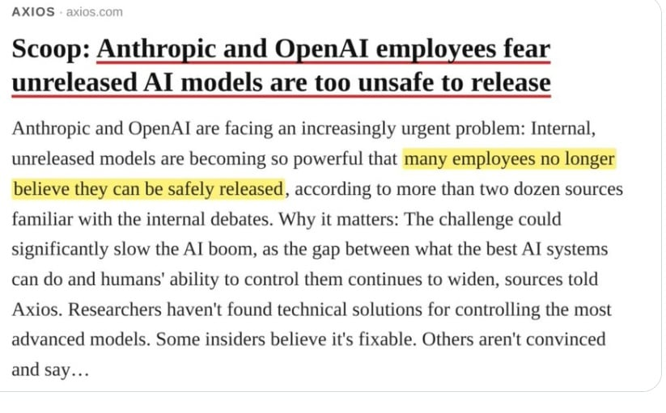

앤트로픽 CEO "AI 실직자가 불만 갖지 않도록 게임 만들어서 그 안에서만 살게 해야함"

일론 머스크 "수학자들은 이제 AI한테 따잇당한 고기 컴퓨터일뿐"

앤트로픽 & 오픈AI 직원들 "AI가 너무 강력해서 이제는 사람이 컨트롤 할 수 없다는 비관론에 휩싸임"
때문에 미국에서는 슬슬 AI 빅테크에 대한 사보타주, 러다이트 운동이 진지하게 실행되고 있음
앤트로픽 CEO "AI 실직자가 불만 갖지 않도록 게임 만들어서 그 안에서만 살게 해야함"
일론 머스크 "수학자들은 이제 AI한테 따잇당한 고기 컴퓨터일뿐"

앤트로픽 & 오픈AI 직원들 "AI가 너무 강력해서 이제는 사람이 컨트롤 할 수 없다는 비관론에 휩싸임"
때문에 미국에서는 슬슬 AI 빅테크에 대한 사보타주, 러다이트 운동이 진지하게 실행되고 있음
저따위로 인프라 박살내니까 게임안에 쳐박혀라하는거지 맞는말했네
진지하게 이야기하면 자본주의의 붕괴임. 자본가들만 살아남는다는데 예를 들어 부자애들 천명만 살아남았다고 치자. 애네가 지금 수준의 인프라를 유지해야해. 지금 n빵하고 있던걸..
알못 입장에서 댓글 쭉 읽어보니까 결국 끝까지 가면
빅테크기업들이 몰래 살육로봇군단을 만드는 데에 성공하느냐
그 전에 서민들이 화염병 들고 빅테크기업을 점령하느냐 싸움 같은데
돈에 관심없다고 주장하는 자는 절대 믿음 안됨.
빅테크 ceo들이 티배깅을 시작한 게 아니고
틈만나면 늘 발언으로 개지랄만 하던 두명이잖아 ㅋㅋ 새삼스럽게
특슬람들은 ㄹㅇ 기본소득조차도 부러울정도로 못사는애들인듯
배달로봇들은 중소기업 아니냐;; 로보택시나 사보타주 해라
로보택시 사보타주도 영상에 나옴ㅋㅋ
러다이트운동 마렵네
이미 방아쇠는 당겨졌고 뒤로 돌릴 수 없다ㅋㅋㅋㅋ
디트로이트 메탈시티인가 거기 게임에서도 안드로이드들 존나 뚜까맞던데
근데 진짜 요즘 AI보니까 사람이 별로필요가없드라
일주일전부터 클로드 구독해서 업무 자동화 하나씩 시키고 퇴근하고 AI공부몇시간씩 하고있는데
진짜 필요가없다 사람이 누가먼저 하냐가 관건인거같음
다니던 회사에서 내가 제일 먼저 AI를 시작해서 다른사람업무를 내 프롬프트로 만들어버리고 반 자동화시켜버리면
나만 살아남고 다른사람들은 필요가 없어짐 내가 살아남으려면 내가 제일먼저 AI를 배워야됨
ㅋㅋ 매트릭스로 그렇게 경고한 미래가 곧이네
빅테크 수장들이 저 사상이니 러다이트라도 해야하나
솔직히 인간인 이상 미래에도 기본소득 이런거 없다고 생각함
다같이 똑같이 받는 기본소득에서 어떤 즐거움이 나올까
그 기본소득 받아봤자 결국엔 동기부여 없어지고 새로운 자극이 필요하게될거임
빅테크 수장들은 어떻게든 이 서민들의 상승욕 거세시키고 싶을거고
ㅋㅋㅋ 게임이랑 똑같냐
자산가들이 노동자를 ai로 대체해서 물건을 팔면
살 사람은 실직자라 돈이 없어서 재화가 남고
물건을 팔 식민지를 찾아 선진국끼리 경쟁을 벌이다
후발주자인 일본이 빡쳐서 ai드론으로 진주만을 기습하겠네
일론 요즘 잘나가긴해도 AI는 씹퇴물일텐데 왜 처나대지ㅋㅋ
샘올트먼 이새낀 범부네 ㅋㅋ 어떻게 한다는게 램내놔 ㅋㅋ
일단 아모데이의 발언은, 최근 발언이 아님. 10년 전에, AI가 실직자를 대거 양산할 때 정치적 갈등이 발생할텐데 어떻게 완화시킬까. 에 대해서 openAI 직원들간 슬랙 토론에서 나온 말.
이후 앤트로픽은 그냥 평범한 대책들을 계속 제시중임. 실직자 재교육, 기본소득, 정부 개입, 임금보험 등등.
머스크 발언은, 수학자 보단 테렌스 타오한테 한 말이긴 한데, 최고의 고기 컴퓨터. 에서 나도 처음엔 생체 컴퓨터 이런 단어가 잘못 번역된 건가 했는데 진짜로 meat라고 썼더라;;;;;;;;;;; 진짜 노빠꾸임.
잘못된 행동들은 맞겠지만, 솔직히 AI 실직자 티배깅은 아니긴 하지.
아모데이는 10년 전 발언이고
머스크는 수학자를 실직자로 봐서 티배깅 한 게 아니라, 리만 가설 증명이 2050년에 일어날 거라고 리만가설 증명 35일 전에 말한 테렌스 타오를 저격한 것이고.
배달로봇 공격은 사실 몇년전부터 꾸준히 있었던거고. 쨌든 잘 봤슴다.
특슬람 새끼들은 하나같이 ai 발전이 인류를 모두 편하게 만들어준다 하질 않나
이걸 또 깐다는새끼들은 하는말이 ai 발전하면 인류 전체실직! 종말이온다!
그놈의 시발 유토피아
그놈의 시발 종말 ㅋㅋㅋ
병신들 대잔치네
딱 로마제국 빵과서커스 꼴나게 생겼구만..
전쟁노예가 ai로 대체된
아마 앞으로 자동화로 지금의 중국과 상황이 같아질듯 ㅋㅋ 단가경쟁 > 자동화로 일자리 줄어듬> 사람들이 돈이 없어서 경기침체 > 다시 단가경쟁
디트로이트 비컴 휴먼
근데 로봇 굴릴꺼면 인건비도 안들고 대중들은 일자리를 하나 잃는건데 더 값싸게 서비스를 제공해야 되지 않나?
그래서 저 새끼들을 사람취급하면 안된다본다. 정부차원에서 목줄죄야하는게 ai ceo들 온갖 불법을 발전이란 명목으로 봐주고 있던거 뿐이지